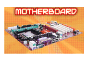

 A motherborad is the main printed circuit board (PCB) found in computers and other expandable systems. It holds many of the crucial electronic components of the system, such as the central processing unit (CPU) and memory, and provides connectors for other peripherals.